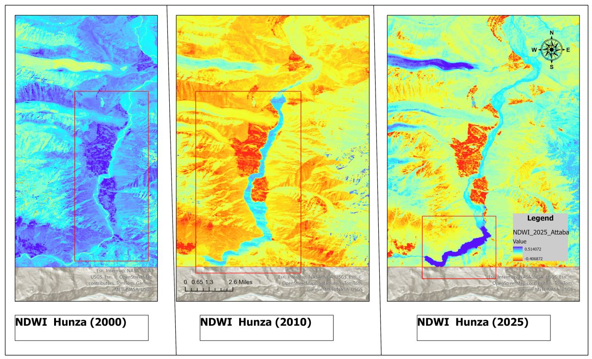

GIS analyst and researcher specializing in glacier dynamics, GLOF risk, and environmental change in Central and South Asian mountain regions.
BSc Earth & Environmental Science · University of Central Asia · Dean's List (3 consecutive years)
I'm an undergraduate Earth & Environmental Science student at the University of Central Asia in Tajikistan, consistently on the Dean's List for three years. My research focuses on GIS, remote sensing, and mountain environments — particularly glacier-lake dynamics and GLOF risk in the Pamir Mountains.
Beyond geospatial work, I explore environmental humanities: how indigenous ecological knowledge, oral traditions, and cultural heritage intersect with climate resilience across Central and South Asia. I work fluently in Wakhi, Tajik, Urdu, Russian, and English.
On campus I serve as President of the UCA Student Association, Operations Lead for TEDx, and Director of the Performing Arts Society. I'm also a Scout Leader Trainer with the Pakistan Boy Scouts Association.

Figure 1. NDWI-derived evolution of Attabad Lake showing the absence of the lake in 2000, its formation following the 2010 landslide event, and its extent in 2025.

Figure 2. Temporal variation in Attabad Lake surface area between 2000 and 2025, illustrating post-landslide expansion and recent reductions in lake extent.
Open to research collaborations, GIS projects, and academic discussions in Earth & Environmental Science, mountain resilience, and environmental humanities across Central Asia.